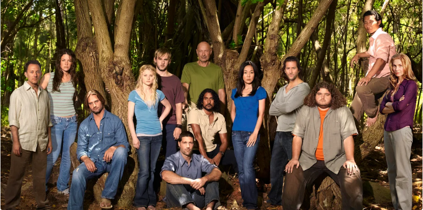
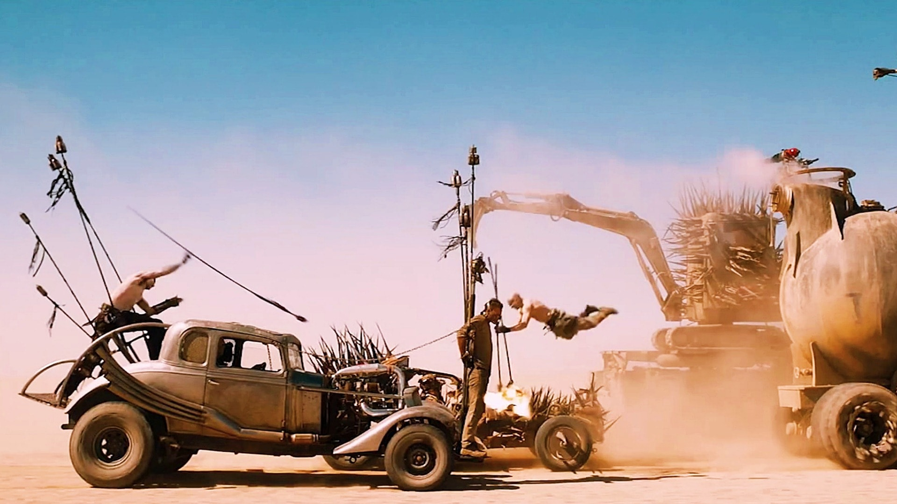

cannot hesistate to recommend it to anyone else who is a movie fanatic and a lover of tense and non-predicatble
series of events where every character has a role to pay and depicts on current events.

This was one of my favourite movies of all time and it captured my attention ever since i watched
the first season in 2008. I was hooked to an extent that when i was indepedent i had to look
for it and rewatch it. All the 3 seasons.
Watched my first season way back in 2007, but since it was always brought at school, i never got the
chance to watch the whole of it until of recent here in 2023 when i downloaded and watched all the
six seasons. Even though its setting was way back in 2002, it is still one of my favourite series todate.

Wait a minute, who doesnt love some mad-action movie which keeps you at the edge of your seat as you
enjoy the unleashed tense of the action. Set way back in 2012, but still an amazing on to go for.

Currently at a 2 season production with prospects for a 3rd season, its an intriging one to watch and i
cannot hesistate to recommend it to anyone else who is a movie fanatic and a lover of tense and non-predicatble
series of events where every character has a role to pay and depicts on current events.
With 3 seperate feature movies, Comedy is an all the way to go for, what i must warn you is that,
you definately love all of them and keep wishing they could make one more. i love love all the three.